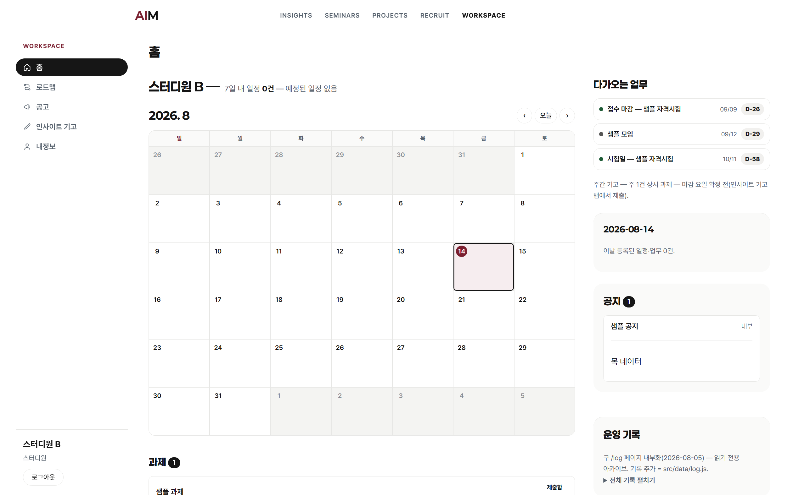

세팅과 큰 그림
진도 없음 · 환경 세팅과 방향 정렬이 오늘의 범위 · 60분

오늘 로그인할 곳 = AIM 허브 워크스페이스
이 파트에서 얻는 것 = 시장 기준과 스터디의 최종 목표 한 줄
사용 여부는 변별 항목이 아님 · 대표 수치 3건
한 학기 뒤 도달 상태 · 4단 순서로 도달
같은 과제(경영정보 팀과제 발표자료 준비)를 두 방식으로 AI에 요청한 결과 비교 · 전원 챗봇 경험자
뼈대만 있는 일반 목차. 과목·분량·형식 미반영이라 다시 시키는 왕복 반복.
같은 도구·같은 시간에 조건이 반영된 제출용 초안.